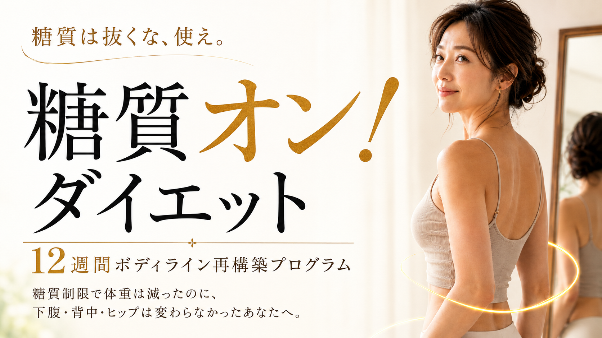
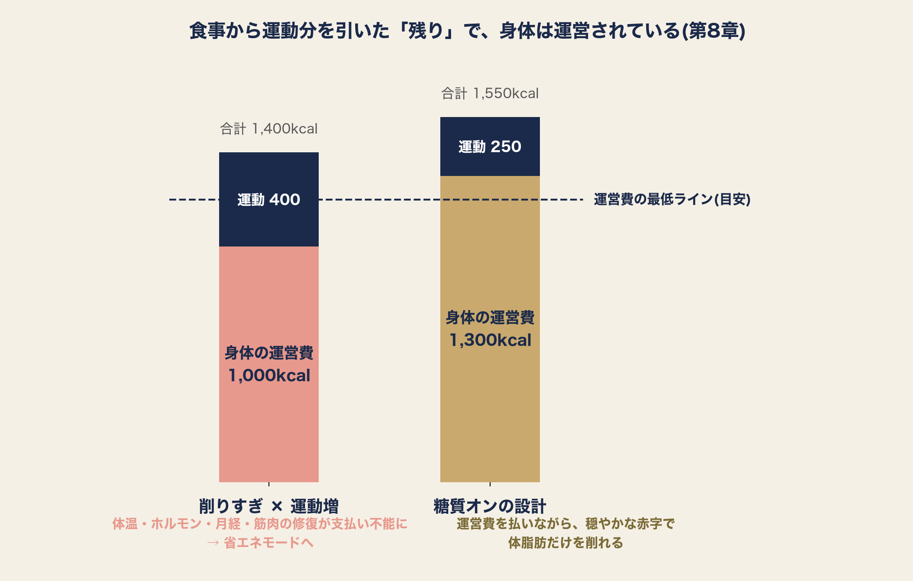

糖質制限をしたら、
体重は減った。
でも、身体のラインに
満足できなかった。
糖質は抜くな、使え。
糖質オン！
ダイエット
――糖質制限で体重は減ったのに、
下腹・背中・ヒップは変わらなかったあなたへ。
12週間 ボディライン再構築プログラム
Brainにて先行発売
コンセプトムービー

PROLOGUE MOVIE (78s)
こんな経験は、ありませんか。
- ✓ 下腹の丸みが、取れない
- ✓ ブラジャーの上に、背中の肉が乗る
- ✓ ヒップと太ももの境目が、曖昧になってきた
- ✓ 体重はそれほど重くないのに、服が似合わなくなった
- ✓ 糖質制限で痩せたのに、なぜか貧相になった
- ✓ そして、リバウンドを繰り返している
ひとつでも当てはまるなら、このページは、
あなたのために書きました。
あなたは、間違っていません。
間違っていたのは、あなたではなく、
理論の方でした。
『痩せる』と『締まる』は、別の現象です。体重計が測っているのは重さだけ。食べないダイエットは、脂肪と一緒に、身体の輪郭を支える筋肉まで削ります。だから数字は減っても、鏡の中の自分に満足できなかった。
さらに、エネルギーを削られた身体は『省エネモード』に入り、動けなくなり、消費そのものが減っていく。頑張るほど痩せない悪循環が、そこにあります。

食事から運動分を引いた『残り』で、身体は運営されている
糖質を抜くのではない。
ちゃんと働かせることが
肝心である。
『糖質オン！』とは、糖質を運動・筋肉・回復のエネルギーとして配置し、身体の消費量をオンにする方法です。
これは『糖質を食べれば痩せる』という魔法の話ではありません。エネルギー収支の原則は守ります。守り方を、設計図のレベルから組み直すのです。

糖質オン！メソッド――糖質は『その日の運動量』で増減させる
先行価格は、公開から3日間だけ。
糖質オン！ダイエットをBrainで読む →
この本を書いたのは、
あなたと同じ失敗をしてきた男です。
現在は『経営』を言語化するスペシャリスト、そしてジェロントロジー(老年学)指導員として、人生後半の身体と生き方の設計に携わっています。
ダイエット歴は、あなたと同じくらい長い。高校時代の水飲みダイエットから、ジムでの糖質制限まで。すべて痩せて、すべて戻りました。悪かったのは意志ではなく設計だった——その結論を、国内外の研究に基づいて検証し、一冊に設計し直したのが本書です。
私はトレーナーでも医師でもありません。だからこそ、業界の常識の外から、あなたのダイエットを『設計』し直せると考えています。
5部17章+終章。
約17万字の設計図。
各章の終わりに『この章の結論』。
忙しい日は、結論だけ拾い読みできます。
読むだけで、終わらせない。
読んで終わりにしない。
ここから先は、あなた自身の身体のデータを活用しましょう
購入者特典
12週間記録表 (Excel版・7日平均もくびれの変化も自動計算)
レビュー特典
28日食事テンプレート完全版 (買い物リスト付き)
この本が向かない方
-
・
1ヶ月で5kg落としたい方
(本書は週に体重の0.5%前後の緩やかな設計です) - ・ 『食べるだけで痩せる』魔法を探している方
-
・
妊娠中・授乳中・疾患治療中の方
(本書より主治医の指示が優先です)
この本が向く方
もう極端なダイエットはしたくない。
でも、鏡の前の自分を諦めたくない——そう思っている方へ。
先行価格は、公開から3日間だけ。
糖質オン！ダイエットをBrainで読む →先行リーダーたちの声
正直、「糖質を使う」なんて都合のいい話だと思っていました。糖質制限で結局リバウンドしてきた身としては半信半疑でしたが、試しに筋トレの日だけご飯を増やしてみたら、体重はほぼ同じなのにウエストが2cm近く細くなって驚いています。理屈で納得できたのが大きかったです。
— 40代・会社員
停滞期が来るたびに食事を減らして失敗してきたので、「維持カロリーに戻す」という発想には最初かなり抵抗がありました。でも思い切って言われた通りにしたら、1週間後には体重がまた動き始めて。数字で理由がわかると、我慢しなくていいんだと初めて思えました。
— 50代・主婦
長年ご飯を怖いものだと思い込んでいたので、最初はページを開くのも半信半疑でした。でも「脂質との重なりを見る」という視点に納得してからは、コンビニでの選び方が変わりました。何よりお腹が空いてイライラすることが減ったのが一番の変化です。
— 40代・専門職
運動経験ゼロで、正直続けられる自信はありませんでした。それでも週2回・自宅の6種目だけならと半信半疑で始めて4週間。先日、後ろ姿を撮った写真を見て、自分でもヒップの位置が変わっているのがわかって嬉しくなりました。
— 30代後半・自営業
12週間の設計図に、
いくら払うか。
読み終えたあとの追加費用はありません。
ジムに入る前に、まず『設計』を手に入れてください。
先行価格は、公開から3日間だけ。以降¥5,980に、レビュー件数の節目でさらに段階的に値上げします。この商品が最も安いのは、いまです。
よくあるご質問
問題ありません。筋トレは自宅・道具なし・週2回30分から始まり、最初の4週間は『フォームを覚えるだけ』の期間です。
本書の第2部が、まさに『糖質制限からの切り替え』の理論編です。最初の2週間は観測期間なので、急激な切り替えは起きません。
本書のターゲットのど真ん中です。『年齢と代謝』の誤解を解くところから始めます。
設計原理は共通です。ただし文章・事例・数値例は40〜50代女性向けに書かれています。
※本書は一般向けの情報であり、医療アドバイスではありません。
妊娠中・治療中の方は主治医の指示を優先してください。
食べることを、
もう怖がらなくていい。
糖質を抜くのではなく、あなたの美しさのために働かせる。12週間後、服を脱いだ鏡の前で、少しだけ胸を張るあなたに会えることを、楽しみにしています。
先行価格は、公開から3日間だけ。
糖質オン！ダイエットをBrainで読む →